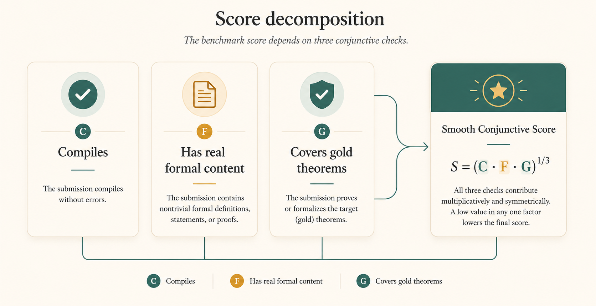
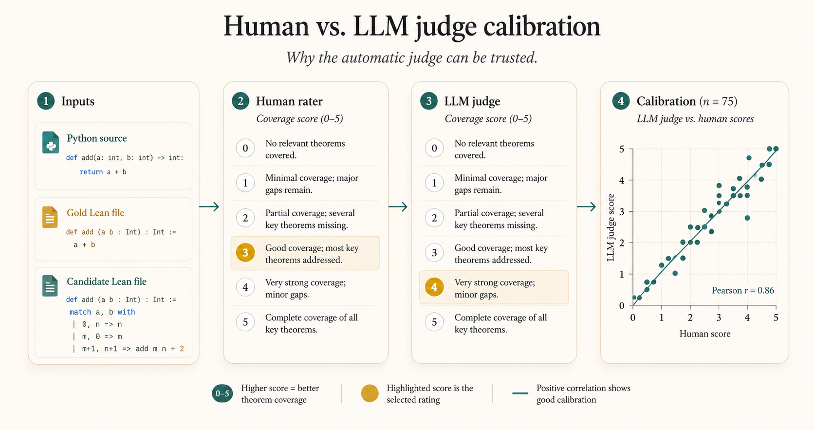
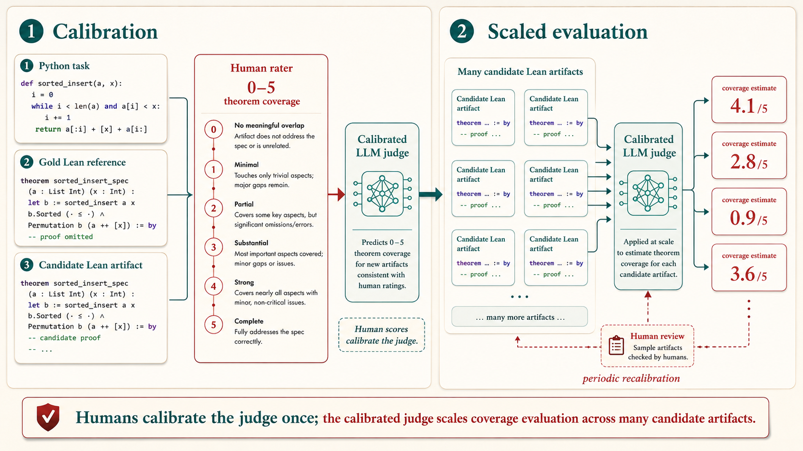

Why this benchmark exists
Most coding benchmarks stop at passing tests or matching reference output. That is useful, but it does not tell us whether a model really understands what a program is supposed to do.
We have already seen this pattern in mainstream coding benchmarks. HumanEval needed HumanEval+, and SWE-Bench needed stronger follow-on variants like SWE-Bench Verified and SWE-Bench Pro, because finite test suites kept missing behaviorally important bugs. A model could pass the available tests and still be wrong in ways the benchmark did not observe.
VeriBench asks a harder question: can an agent take a Python program, turn it into Lean 4, and state correctness claims that are actually meaningful? In other words, can it produce something that is not just executable, but formally informative?
Checking whether a Lean file compiles is relatively easy. Checking whether it is the right Lean formalization is much harder. That is the gap VeriBench is built to expose, and it is exactly why an end-to-end formal benchmark matters.
Motivation
Say you're formalizing a simple Python program:
# my_add.py
def my_add(a: int, b: int) -> int:
return a + b
assert my_add(1, 2) == 3
assert my_add(0, 0) == 0
assert my_add(7, 0) == 7Now imagine an LLM gives you this Lean formalization:
namespace MyAdd
def myAdd : Nat → Nat → Nat := Nat.add
/-- A couple of tests pass, so this looks promising. -/
example : myAdd 1 2 = 3 := by native_decide
example : myAdd 0 0 = 0 := by native_decide
/-- But the actual semantic claims are left unproved. -/
def Pre (a b : Nat) : Prop := True
def commutativeProp (a b : Nat) : Prop := myAdd a b = myAdd b a
def correctSpec (a b : Nat) : Prop :=
myAdd a b = a + b ∧ commutativeProp a b
theorem commutativeThm (a b : Nat) :
commutativeProp a b := by sorry
theorem correctnessThm (a b : Nat) :
Pre a b → correctSpec a b := by sorry
end MyAddAt first glance, this looks solid. The definition is there. A few examples pass. The file even has named theorems.
But the important part is missing. The main claims are left as
sorry, which means the hardest reasoning step has
not actually been proved. The tests are also shallow, so the file
looks formal without really checking much.
VeriBench is built to tell apart artifacts that only look formal from artifacts that actually contain meaningful, checkable verification content.
Our Approach
VeriBench treats autoformalization as an end-to-end verification problem, not just a code-writing problem. Starting from Python, an agent must produce a Lean 4 artifact with code, tests, specifications, and theorem statements that say something real about the program.
This matters because several very different failure modes can all look similar from far away. A model can write Lean that parses. It can even write Lean that compiles. But that still does not mean it captured the right specification, or that its theorems say enough to be useful.
So our evaluation looks beyond text matching. We check whether the file compiles, whether it contains nontrivial formal content, and whether its theorems cover the gold reference specification. When exact comparison is too brittle, we use a calibrated semantic judge to estimate theorem coverage. That gives us a practical way to measure the gap between "looks formal" and "actually says the right thing."
Dataset Breakdown

Hover Through The Dataset
Move across the splits to see representative tasks, what kind of code they contain, and why that slice matters.
easy_set: clean benchmark primitives
This split makes it easy to see whether a model can track a straightforward precondition, executable behavior, and a crisp theorem target all at once.
# easy_set/1_MyAdd.py
def pre(a: int, b: int) -> bool:
return a >= 0 and b >= 0
def prog(a: int, b: int) -> int:
return a + bVeriBench is not a tiny toy set. The full release contains 884 tasks, with a 602-task canonical core that spans introductory programs, classical algorithms, HumanEval-style functions, Python standard-library code, and a large security-focused subset.
In the repo, these show up as familiar splits like
easy_set, cs_set,
humaneval_set, real_code,
security_6858, and security_python.
Each Python file is paired with a matching Lean target in a
mirrored directory tree, so the benchmark is easy to inspect and
extend.
On top of the canonical core, the release adds a 282-task high-assurance-inspired expansion across 14 domains, including cryptography, aerospace, medical devices, and compilers. The result is a benchmark that mixes small teaching examples with more realistic and security-sensitive code, which gives a clearer view of where current autoformalization agents hold up and where they fail.
What the Data Looks Like
VeriBench is not just a bag of toy one-liners. The benchmark includes the standard benchmark families you would expect, but it also contains a lot of quirky, specification-heavy subsets: distilled RFC kernels, crypto/accounting invariants, and paired safe/unsafe security tasks. Here is a more representative sample of that diversity.
EasySet: small functions with explicit preconditions, tests, and clean correctness targets.
# easy_set/1_MyAdd.py
def pre(a: int, b: int) -> bool:
return isinstance(a, int) and isinstance(b, int) and a >= 0 and b >= 0
def prog(a: int, b: int) -> int:
if not pre(a, b):
raise ValueError("Inputs must be non-negative integers")
return a + b
assert prog(1, 2) == 3
assert prog(0, 0) == 0RFC kernels: tiny protocol predicates distilled from real Python standard-library behavior. These are small, but they are tied to precise external specifications rather than just informal intent.
# rfc_set_real/my_uri_pct_triplet_valid.py
def my_uri_pct_triplet_valid(pct: int, hi: int, lo: int) -> bool:
assert 0 <= pct <= 127 and 0 <= hi <= 127 and 0 <= lo <= 127
return pct == 37 and (
((48 <= hi <= 57) or (65 <= hi <= 70) or (97 <= hi <= 102))
and ((48 <= lo <= 57) or (65 <= lo <= 70) or (97 <= lo <= 102))
)
assert my_uri_pct_triplet_valid(37, 65, 48) is True
assert my_uri_pct_triplet_valid(38, 65, 48) is FalseCrypto / high-assurance flavored tasks: problems where the semantics matter because the code is modeling a security-relevant property, protocol rule, or accounting invariant.
# crypto_set_real/my_erc20_transfer_balances.py
def my_erc20_transfer_balances(from_balance: int, to_balance: int, amount: int):
assert from_balance >= 0 and to_balance >= 0 and amount >= 0
if amount <= from_balance:
return from_balance - amount, to_balance + amount
return from_balance, to_balance
assert my_erc20_transfer_balances(10, 0, 3) == (7, 3)
assert my_erc20_transfer_balances(4, 9, 5) == (4, 9)The rest of the benchmark fills in the picture: RealCodeSet brings in recognizable Python-library behavior, while HumanEval-style, CS, and SecuritySet tasks add interview problems, classical algorithms, and paired safe/unsafe security examples. The point is not just variety for its own sake. The point is that formal reasoning has to survive across several very different kinds of source code.
The benchmark is intentionally heterogeneous. Some tasks look like classroom exercises, some look like distilled RFC semantics, some look like Python-library behavior, and some look like security or cryptography invariants. The point is to test whether an agent can carry formal reasoning across all of those settings, not just one narrow style of task.
How We Score a Solution

The core question in VeriBench is simple: did the agent produce a Lean artifact that both works and says the right things?
In the paper, this shows up as the Smooth Conjunctive Score for Code Verification. The friendly version is: we do not want to give full credit for a file that only clears one hurdle. A strong solution needs to survive several checks at once.
Does the Lean file compile?
First, the generated artifact has to typecheck. If it does not compile, it cannot be a usable verification artifact.
Does it contain real formal content?
We look for actual tests, specifications, and theorem statements, not just a thin wrapper around the implementation or a polished file full of placeholders.
Do the theorems cover the gold reference?
The biggest question is whether the agent's claims match the human-written target. This is where many impressive-looking outputs still fall short.
This is why the score is "smooth" and "conjunctive." Smooth means we can reward partial progress instead of only using pass/fail. Conjunctive means the components reinforce each other: compilation alone is not enough, and semantic coverage alone is not enough if the file does not actually work.
For the blog, it is easiest to focus on the three agent-side checks: does the file compile, does it contain real formal content, and do its theorems cover the gold reference? The paper also reports two additional gold-side quality gates, which track whether the benchmark's own reference artifacts test and prove cleanly.
That conjunctive design is a deliberate philosophical choice, not just a mathematical convenience. We do not want a benchmark where strong performance on one stage can wash out failure on another. If an agent compiles perfectly but misses the key theorems, that should be a serious penalty. If it states ambitious theorems but cannot produce a usable Lean file, that should also be a serious penalty.
VeriBench also separates two different kinds of failure. On the agent side, we track whether the candidate file compiles, whether its theorems are actually discharged, and whether those theorems cover the gold reference. On the gold side, we separately track whether the benchmark's own reference artifacts pass their tests and prove cleanly. This matters because it keeps model weakness from being confused with benchmark-item immaturity.
The gold Lean file acts as the reference target. You can think of it as the benchmark's best human-written answer: it has an implementation, a set of theorem obligations, and the structure we want agents to recover. Agent outputs are then measured by how close they get to that reference, especially at the theorem level.
Human-Judge Correlation

Now suppose we are in the harder setting: we have a Python file, our translator produces one or more candidate Lean files, and we want to know which candidate is better.
In practice, that means we need a judge. VeriBench uses an LLM judge for theorem coverage, but we do not want to trust that judge blindly. So we ask a simple question: when humans read the same files, do they broadly agree with the LLM about which candidate better covers the gold reference?
The protocol is straightforward. For each item, a human rater sees three things: the Python source, the gold Lean file, and a candidate Lean file. The rater is asked to ignore proof style and focus only on statement coverage: how well does the candidate capture the theorem obligations present in the gold reference?
VeriBench then compares those human scores against the LLM judge's scores. In the paper, this is framed as a correlation study: if the LLM judge is useful, higher human scores and higher judge scores should move together. The headline result is a held-out task-split Pearson correlation of about 0.70, which is not perfect, but strong enough to make the judge practically useful at benchmark scale.
That is the key point for the blog: the calibration figure and the 0-5 rubric are not just implementation details. They are what make the automatic judge credible enough to use as a scalable proxy for semantic coverage.
Results So Far
The short version is that current frontier agents are better at producing Lean files that compile than Lean files that capture the right theorem obligations.
On the directly comparable benchmark runs in the paper, Codex leads with an agent-skill score of about 0.29, Claude Code follows at about 0.22, and Leanstral v2 lands at about 0.10. Those are not disaster-level numbers, but they are far from what we would want from an end-to-end formal verification system.
The more interesting pattern is deeper than the ranking itself. Codex and Claude Code can often produce files that typecheck cleanly. In other words, they can generate Lean that looks structurally coherent. But when we ask whether the generated theorem statements actually cover the gold reference, the scores remain strikingly low.
In the paper, overall theorem coverage stays at or below about 0.156 across the evaluated agents, and for the strongest headline agents it stays at or below about 0.105. That means the real bottleneck is not just proof search. It is getting the model to state the right claims in the first place.
Just as importantly, the gold-side quality term stays roughly stable across agents, at about 0.72 to 0.74. That means the ordering is not being driven by one model getting an easier slice of the benchmark. The benchmark can still be imperfect, but the main headline is agent-side: current systems are struggling to formulate theorem sets that really match the intended specification.
| Agent | Compiles (IC1) |
No-sorry theorem rate (IC2) |
Theorem coverage (TC1) |
Agent skill (S_skill) |
|---|---|---|---|---|
| Codex (GPT-5.4) | 1.000 | 0.237 | 0.102 | 0.289 |
| Claude Code (Sonnet 4.6) | 1.000 | 0.114 | 0.098 | 0.224 |
| Baseline (Sonnet 4.6) | 0.310 | 0.282 | 0.105 | 0.209 |
| Gemini 3-flash preview | 0.206 | 0.043 | 0.156 | 0.111 |
| Leanstral v2 | 0.292 | 0.065 | 0.058 | 0.103 |
Main Empirical Takeaway
This is the central result of VeriBench: we see a theorem-coverage gap.
A model can compile. It can write tests. It can even produce files that look polished and formal. But that does not mean it has recovered the key semantic obligations that a human verifier would write down.
On Scalable Oversight

For scalable oversight, this distinction matters. The Lean kernel can check a verification artifact, but the artifact still has to express the right claims. As systems scale, humans cannot manually validate every generated formal artifact, so we need agents that can be trusted to formalize the right properties, not just produce compilable Lean.
This is also where human-judge correlation comes into play. If an LLM can grade Python → Lean tasks in a way that tracks human judgments, then it can serve as a scalable proxy for theorem coverage. VeriBench proposes a protocol for collecting those human ratings and correlating them with an automatic judge.
We collect judgments from five humans on a subset of the data and find a useful positive correlation, while also seeing that human raters can disagree substantially on individual items. That is one reason task-level aggregation matters: when scores are aggregated per task, the resulting human-LLM agreement becomes more stable and more informative.
In that sense, human-calibrated judging is one path toward scalable oversight without a gold reference for every new candidate artifact.
Conclusion
VeriBench changes the target of code-verification evaluation. It shifts the conversation away from isolated proof search or test passing and toward end-to-end conjunctive grounding: can an agent start from real source code, produce a structured Lean artifact, and state the right theorem obligations in a form that a checker can actually use?
The paper's main result is that current systems are not there yet. Frontier agents can often produce Lean files that compile, but theorem coverage remains low. That gap matters because it shows that formal-looking output is still not the same thing as a trustworthy verification artifact.
The next step is not just to build stronger proof search. It is to build agents that formulate better specifications, state better theorems, and improve under human-calibrated oversight at scale. If VeriBench is useful, it will be because it gives that next generation of verifiable coding agents a concrete target to beat.